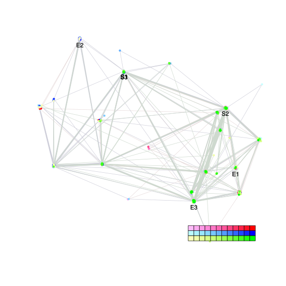
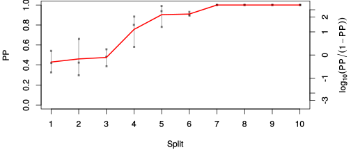
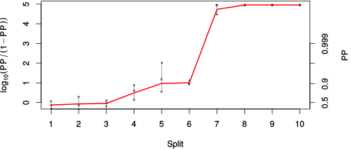

| chain # | burnin | subsample | Iterations (remaining) | command line | subdirectory | directory |
|---|---|---|---|---|---|---|
| 1 | 10000 | 1 | 90000 | bali-phy E1_AA_red3_v2_BetaGamma_Lambda.fas -s 78963 -n BetaGamma_Lambda_c1 | BetaGamma_Lambda_c1-1 | /DATA/work/ONCOGENEVOL/database/trees/Bali-Phy/E1 |
| 2 | 10000 | 1 | 90000 | bali-phy E1_AA_red3_v2_BetaGamma_Lambda.fas -s 25632 -n BetaGamma_Lambda_c2 | BetaGamma_Lambda_c2-1 | /DATA/work/ONCOGENEVOL/database/trees/Bali-Phy/E1 |
| 3 | 10000 | 1 | 90000 | bali-phy E1_AA_red3_v2_BetaGamma_Lambda.fas -s 89345 -n BetaGamma_Lambda_c3 | BetaGamma_Lambda_c3-1 | /DATA/work/ONCOGENEVOL/database/trees/Bali-Phy/E1 |
| P(data|M) = -12797.014 +- 1.767 | Complete sample: 94 topologies | 95% Bayesian credible interval: 27 topologies |

Phylogeny Distribution

| Partition support: Summary |
| Partition support graph: SVG |
| 50% consensus | Newick (+PP) | SVG | |||||
| 66% consensus | Newick (+PP) | SVG | |||||
| 80% consensus | Newick (+PP) | SVG | |||||
| 90% consensus | Newick (+PP) | SVG | |||||
| 95% consensus | Newick (+PP) | SVG | |||||
| 99% consensus | Newick (+PP) | SVG | |||||
| 100% consensus | Newick (+PP) | SVG | |||||
| MAP | Newick (+PP) | SVG | |||||
| greedy | Newick (+PP) | SVG |
{kind=link}
{kind=link}
{kind=link}
{kind=link}
{kind=link}
{kind=link}
{kind=link}
{kind=link}
Alignment Distribution
Partition 1
| Diff | Min. %identity | # Sites | Constant | Informative | ||||
|---|---|---|---|---|---|---|---|---|
| Initial | FASTA | HTML | Diff | 4.4% | 669 | 1 (0.149%) | 571 (85.4%) | |
| Best (WPD) | FASTA | HTML | AU | 32.6% | 819 | 86 (10.5%) | 439 (53.6%) |


Mixing
| burnin (scalar) | ESS (scalar) | ESS (partition) | ASDSF | MSDSF | PSRF-CI80% | PSRF-RCF |
|---|---|---|---|---|---|---|
| 6140 | 122.9 | 35.156 | 0.074 | 0.185 | 1.012 | 1.075 |
Projection of RF distances for the first 3 chains3D | Variation of split PPs across chains |
Scalar variables
| Statistic | Median | 95% BCI | ACT | ESS | burnin | PSRF-CI80% | PSRF-RCF |
|---|---|---|---|---|---|---|---|
| prior | -1021 | (-1108, -937.8) | 1200 | 224 | 1000 | 1.012 | 1.002 |
| prior_A1 | -1029 | (-1114, -947.6) | 1191 | 226 | 990 | 1.011 | 0.9991 |
| likelihood | -1.273e+04 | (-1.279e+04, -1.267e+04) | 1261 | 214 | 659 | 1.007 | 1 |
| logp | -1.375e+04 | (-1.381e+04, -1.37e+04) | 401.2 | 672 | 1020 | 1.005 | 1.003 |
| Heat.beta | 1 | ||||||
| Scale1 | 4.188 | (2.322, 6.799) | 1.021 | 264321 | 108 | 1 | 0.9997 |
| S1.F.pi.A | 0.07012 | (0.06137, 0.07913) | 16.74 | 16130 | 112 | 0.9995 | 0.9992 |
| S1.F.pi.R | 0.04282 | (0.036, 0.04995) | 8.997 | 30011 | 474 | 0.9999 | 0.9957 |
| S1.F.pi.N | 0.03689 | (0.03122, 0.04302) | 14.23 | 18968 | 168 | 1.002 | 0.9992 |
| S1.F.pi.D | 0.06487 | (0.05585, 0.074) | 37.71 | 7159 | 255 | 1.003 | 1 |
| S1.F.pi.C | 0.04724 | (0.03818, 0.05661) | 8.095 | 33354 | 649 | 1 | 0.996 |
| S1.F.pi.Q | 0.03906 | (0.03308, 0.04537) | 11.56 | 23354 | 358 | 1.001 | 1.004 |
| S1.F.pi.E | 0.05785 | (0.05029, 0.06571) | 13.64 | 19795 | 242 | 1.001 | 1.001 |
| S1.F.pi.G | 0.06426 | (0.05381, 0.07517) | 73.28 | 3684 | 264 | 1 | 0.9999 |
| S1.F.pi.H | 0.02358 | (0.01863, 0.02902) | 9.538 | 28307 | 277 | 1.001 | 0.9994 |
| S1.F.pi.I | 0.04417 | (0.03699, 0.0516) | 9.29 | 29063 | 470 | 0.9999 | 0.999 |
| S1.F.pi.L | 0.1008 | (0.08897, 0.113) | 9.995 | 27014 | 166 | 1 | 0.9985 |
| S1.F.pi.K | 0.04551 | (0.03862, 0.05284) | 8.277 | 32622 | 432 | 1 | 0.9989 |
| S1.F.pi.M | 0.02183 | (0.01731, 0.02674) | 8.3 | 32531 | 730 | 1 | 0.9991 |
| S1.F.pi.F | 0.05866 | (0.0494, 0.0685) | 8.349 | 32339 | 208 | 1.001 | 0.9946 |
| S1.F.pi.P | 0.04026 | (0.03232, 0.04869) | 66.81 | 4041 | 167 | 1.003 | 1.003 |
| S1.F.pi.S | 0.07345 | (0.06457, 0.08262) | 35.12 | 7687 | 310 | 1.002 | 0.9965 |
| S1.F.pi.T | 0.05586 | (0.04807, 0.06386) | 11.03 | 24481 | 437 | 0.9998 | 0.9977 |
| S1.F.pi.W | 0.01183 | (0.007377, 0.01687) | 8.276 | 32622 | 310 | 1.001 | 1.008 |
| S1.F.pi.Y | 0.03117 | (0.02463, 0.03817) | 8.869 | 30443 | 422 | 1 | 1.003 |
| S1.F.pi.V | 0.06783 | (0.05881, 0.0772) | 10.34 | 26109 | 232 | 1.001 | 1.004 |
| I1.RS07.meanIndelLengthMinus1 | 2.123 | (1.586, 2.736) | 1172 | 230 | 368 | 1.002 | 1.008 |
| I1.RS07.logLambda | -3.794 | (-4.013, -3.584) | 214.2 | 1260 | 204 | 1.002 | 1 |
| |A1| | 802 | (772, 833) | 2196 | 122 | 6140 | 0.9832 | 1.075 |
| #indels1 | 127 | (115, 140) | 1272 | 212 | 925 | 0.9412 | 0.9958 |
| |indels1| | 402 | (354, 452) | 1911 | 141 | 701 | 1.011 | 1.029 |
| #substs1 | 2274 | (2240, 2304) | 1822 | 148 | 643 | 0.984 | 1.024 |
| Scale1*|T| | 4.727 | (4.509, 4.957) | 159.7 | 1690 | 57 | 1.002 | 0.9993 |
| |A| | 802 | (772, 833) | 2196 | 122 | 6140 | 0.9832 | 1.075 |
| #indels | 127 | (115, 140) | 1272 | 212 | 925 | 0.9412 | 0.9958 |
| |indels| | 402 | (354, 452) | 1911 | 141 | 701 | 1.011 | 1.029 |
| #substs | 2274 | (2240, 2304) | 1822 | 148 | 643 | 0.984 | 1.024 |
| |T| | 1.129 | (0.605, 1.772) | 1.011 | 266989 | 105 | 0.9999 | 0.9988 |